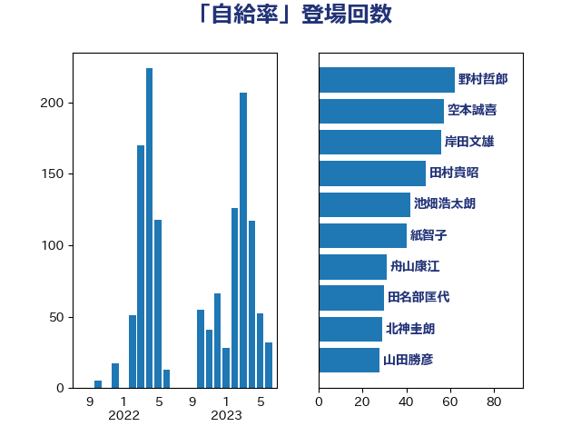

単語「自給率」

| 野村哲郎 | 自由民主党 | 62 回 |
| 空本誠喜 | 日本維新の会 | 57 回 |
| 岸田文雄 | 自由民主党 | 56 回 |
| 田村貴昭 | 日本共産党 | 49 回 |
| 池畑浩太朗 | 日本維新の会 | 42 回 |
| 紙智子 | 日本共産党 | 40 回 |
| 舟山康江 | 国民民主党 | 31 回 |
| 田名部匡代 | 立憲民主党 | 30 回 |
| 北神圭朗 | 無所属 | 29 回 |
| 山田勝彦 | 立憲民主党 | 28 回 |
| 萩生田光一 | 自由民主党 | 22 回 |
| 河野義博 | 公明党 | 22 回 |
| 徳永エリ | 立憲民主党 | 19 回 |
| 西村康稔 | 自由民主党 | 17 回 |
| 加藤竜祥 | 自由民主党 | 17 回 |
| 横沢高徳 | 立憲民主党 | 16 回 |
| 串田誠一 | 日本維新の会 | 16 回 |
| 青島健太 | 日本維新の会 | 14 回 |
| 金子恵美 | 立憲民主党 | 14 回 |
| 石垣のりこ | 立憲民主党 | 14 回 |
| 櫛渕万里 | れいわ新選組 | 14 回 |
| 庄子賢一 | 公明党 | 14 回 |
| 長友慎治 | 国民民主党 | 13 回 |
| 足立康史 | 日本維新の会 | 13 回 |
| 小山展弘 | 立憲民主党 | 13 回 |
| 寺田静 | 無所属 | 12 回 |
| 進藤金日子 | 自由民主党 | 11 回 |
| 細田健一 | 自由民主党 | 11 回 |
| 加藤明良 | 自由民主党 | 11 回 |
| 緑川貴士 | 立憲民主党 | 10 回 |
| 梅村みずほ | 日本維新の会 | 10 回 |
| 野中厚 | 自由民主党 | 9 回 |
| 谷合正明 | 公明党 | 9 回 |
| 石川香織 | 立憲民主党 | 9 回 |
| 梅谷守 | 立憲民主党 | 9 回 |
| 笠井亮 | 日本共産党 | 8 回 |
| 石井啓一 | 公明党 | 8 回 |
| 武部新 | 自由民主党 | 8 回 |
| 小野泰輔 | 日本維新の会 | 8 回 |
| 堤かなめ | 立憲民主党 | 8 回 |
| 佐藤正久 | 自由民主党 | 8 回 |
| 野間健 | 立憲民主党 | 7 回 |
| 安江伸夫 | 公明党 | 7 回 |
| 住吉寛紀 | 日本維新の会 | 7 回 |
| 藤木眞也 | 自由民主党 | 6 回 |
| 落合貴之 | 立憲民主党 | 6 回 |
| 市村浩一郎 | 日本維新の会 | 6 回 |
| 川田龍平 | 立憲民主党 | 6 回 |
| 山口晋 | 自由民主党 | 6 回 |
| 太田房江 | 自由民主党 | 6 回 |
| 北村経夫 | 自由民主党 | 6 回 |
| 江藤拓 | 自由民主党 | 5 回 |
| 岩渕友 | 日本共産党 | 5 回 |
| 山本啓介 | 自由民主党 | 5 回 |
| 奥野総一郎 | 立憲民主党 | 5 回 |
| 仁木博文 | 無所属 | 5 回 |
| 高橋千鶴子 | 日本共産党 | 4 回 |
| 須藤元気 | 無所属 | 4 回 |
| 青木愛 | 立憲民主党 | 4 回 |
| 神津たけし | 立憲民主党 | 4 回 |
| 斎藤アレックス | 国民民主党 | 4 回 |
| 平沼正二郎 | 自由民主党 | 4 回 |
| 小林一大 | 自由民主党 | 4 回 |
| 大野泰正 | 自由民主党 | 4 回 |
| 吉良よし子 | 日本共産党 | 4 回 |
| 青柳仁士 | 日本維新の会 | 3 回 |
| 竹詰仁 | 国民民主党 | 3 回 |
| 竹内譲 | 公明党 | 3 回 |
| 石井苗子 | 日本維新の会 | 3 回 |
| 森山浩行 | 立憲民主党 | 3 回 |
| 林芳正 | 自由民主党 | 3 回 |
| 平山佐知子 | 無所属 | 3 回 |
| 山添拓 | 日本共産党 | 3 回 |
| 小池晃 | 日本共産党 | 3 回 |
| 塩田博昭 | 公明党 | 3 回 |
| 中村裕之 | 自由民主党 | 3 回 |
| 高木かおり | 日本維新の会 | 2 回 |
| 青山繁晴 | 自由民主党 | 2 回 |
| 階猛 | 立憲民主党 | 2 回 |
| 鈴木敦 | 国民民主党 | 2 回 |
| 酒井庸行 | 自由民主党 | 2 回 |
| 遠藤良太 | 日本維新の会 | 2 回 |
| 道下大樹 | 立憲民主党 | 2 回 |
| 近藤昭一 | 立憲民主党 | 2 回 |
| 西野太亮 | 自由民主党 | 2 回 |
| 葉梨康弘 | 自由民主党 | 2 回 |
| 若林健太 | 自由民主党 | 2 回 |
| 簗和生 | 自由民主党 | 2 回 |
| 篠原孝 | 立憲民主党 | 2 回 |
| 穀田恵二 | 日本共産党 | 2 回 |
| 福岡資麿 | 自由民主党 | 2 回 |
| 田嶋要 | 立憲民主党 | 2 回 |
| 牧野たかお | 自由民主党 | 2 回 |
| 滝波宏文 | 自由民主党 | 2 回 |
| 渡辺創 | 立憲民主党 | 2 回 |
| 河野太郎 | 自由民主党 | 2 回 |
| 柳ヶ瀬裕文 | 日本維新の会 | 2 回 |
| 松野博一 | 自由民主党 | 2 回 |
| 東国幹 | 自由民主党 | 2 回 |
| 村田享子 | 立憲民主党 | 2 回 |
| 杉田水脈 | 自由民主党 | 2 回 |
| 志位和夫 | 日本共産党 | 2 回 |
| 山谷えり子 | 自由民主党 | 2 回 |
| 山本順三 | 自由民主党 | 2 回 |
| 山下雄平 | 自由民主党 | 2 回 |
| 山下芳生 | 日本共産党 | 2 回 |
| 小沼巧 | 立憲民主党 | 2 回 |
| 國場幸之助 | 自由民主党 | 2 回 |
| 下野六太 | 公明党 | 2 回 |
| 三上えり | 立憲民主党 | 2 回 |
| ながえ孝子 | 無所属 | 2 回 |
| 高見康裕 | 自由民主党 | 1 回 |
| 高橋光男 | 公明党 | 1 回 |
| 高橋はるみ | 自由民主党 | 1 回 |
| 馬場雄基 | 立憲民主党 | 1 回 |
| 青山大人 | 立憲民主党 | 1 回 |
| 長谷川岳 | 自由民主党 | 1 回 |
| 長坂康正 | 自由民主党 | 1 回 |
| 鈴木義弘 | 国民民主党 | 1 回 |
| 鈴木俊一 | 自由民主党 | 1 回 |
| 野田国義 | 立憲民主党 | 1 回 |
| 重徳和彦 | 立憲民主党 | 1 回 |
| 赤羽一嘉 | 公明党 | 1 回 |
| 角田秀穂 | 公明党 | 1 回 |
| 藤巻健太 | 日本維新の会 | 1 回 |
| 若林洋平 | 自由民主党 | 1 回 |
| 穂坂泰 | 自由民主党 | 1 回 |
| 稲津久 | 公明党 | 1 回 |
| 福島伸享 | 無所属 | 1 回 |
| 福島みずほ | 社会民主党 | 1 回 |
| 神谷裕 | 立憲民主党 | 1 回 |
| 神谷宗幣 | 参政党 | 1 回 |
| 神田潤一 | 自由民主党 | 1 回 |
| 石川昭政 | 自由民主党 | 1 回 |
| 石川博崇 | 公明党 | 1 回 |
| 石井章 | 日本維新の会 | 1 回 |
| 田村智子 | 日本共産党 | 1 回 |
| 田村まみ | 国民民主党 | 1 回 |
| 田島麻衣子 | 立憲民主党 | 1 回 |
| 田中健 | 国民民主党 | 1 回 |
| 片山大介 | 日本維新の会 | 1 回 |
| 沢田良 | 日本維新の会 | 1 回 |
| 江田憲司 | 立憲民主党 | 1 回 |
| 森屋隆 | 立憲民主党 | 1 回 |
| 東徹 | 日本維新の会 | 1 回 |
| 末次精一 | 立憲民主党 | 1 回 |
| 有村治子 | 自由民主党 | 1 回 |
| 日下正喜 | 公明党 | 1 回 |
| 岬麻紀 | 日本維新の会 | 1 回 |
| 岩田和親 | 自由民主党 | 1 回 |
| 山田賢司 | 自由民主党 | 1 回 |
| 山崎誠 | 立憲民主党 | 1 回 |
| 山崎正恭 | 公明党 | 1 回 |
| 山口那津男 | 公明党 | 1 回 |
| 山口壯 | 自由民主党 | 1 回 |
| 尾崎正直 | 自由民主党 | 1 回 |
| 小林鷹之 | 自由民主党 | 1 回 |
| 宮崎雅夫 | 自由民主党 | 1 回 |
| 宮下一郎 | 自由民主党 | 1 回 |
| 室井邦彦 | 日本維新の会 | 1 回 |
| 大塚耕平 | 国民民主党 | 1 回 |
| 坂本祐之輔 | 立憲民主党 | 1 回 |
| 勝俣孝明 | 自由民主党 | 1 回 |
| 務台俊介 | 自由民主党 | 1 回 |
| 中曽根康隆 | 自由民主党 | 1 回 |
| 中山展宏 | 自由民主党 | 1 回 |
| 上田清司 | 国民民主党 | 1 回 |